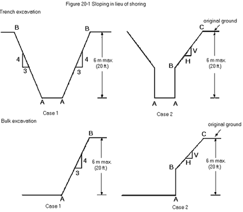
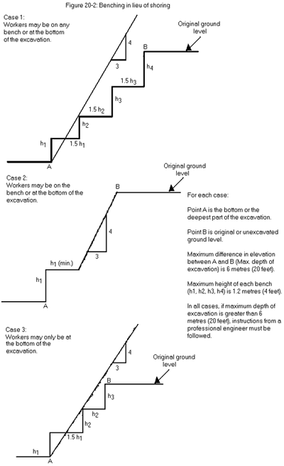
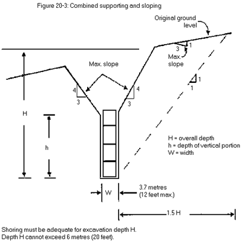

Contents
20.1 Definitions
GENERAL REQUIREMENTS
20.1A Qualified contractor
20.2 Notice of project
20.2.1 Notice of project - hazardous substances
20.3 Coordination of multiple employer workplaces
WASHROOM FACILITIES AT CONSTRUCTION SITES
20.3.1 Definitions
20.3.2 Toilets at specified construction sites
SAFE WORK AREAS AND SAFE ACCESS
20.4 Safe access
20.5 Temporary floors
20.6 Design loads
20.7 Fall protection [Repealed]
20.8 Floor and roof openings [Repealed]
20.9 Protection from falling materials
20.10 Chutes
20.11 Safety headgear [Repealed]
20.12 Glass panels
20.13 Thrust-out crane landing platforms
20.14 Temporary support
20.14.1 Fills
20.14.2 Stockpiles
20.14.3 Unstable face of a stockpile
BRIDGES AND SIMILAR STRUCTURES
20.15 Drawings and special procedures
20.16 Walkways
CONCRETE FALSEWORK AND FORMWORK
20.16.1 Definitions
20.16.2 Application
20.17 Worksite-specific plans required for specified formwork
20.18 Certification of worksite-specific plans by professional engineer
20.19 Continuity of engineering
20.20 Information for worksite-specific plans
20.21 Application drawings and supplementary instructions for flyforms
20.22 Flyform handling
20.23 Supervision
20.24 Equipment requirements
20.25 Concrete placing hazards
20.26 Inspections
CONCRETE PUMPING
20.26.1 Definition
20.26.2 Application of regulation
20.26.3 Standards
20.26.4 Duty to ensure operator's competence
20.26.5 Certification authority
20.26.6 Operator certification
20.27 Equipment identification
20.28 Manufacturer's, supplier's or integrator's manual
20.29 Inspection and maintenance records
20.30 Pre-use inspection
20.30.1 Design and construction
20.31 Controls
20.32 Hydraulic cylinders
20.33 Marking weight
20.34 Lifting a pump
20.35 Securing a pump
20.36 Emergency shutoff [Repealed]
20.37 Agitator guarding
20.38 Engine exhaust
20.39 Housekeeping
20.40 Outriggers
20.41 Use of placing boom [Repealed]
20.42 Pipe diameter and thickness
20.43 Pipe clamps
20.44 Delivery pipe
20.45 Restraining devices
20.46 Concrete pump lines
20.47 Equipment inspection
20.48 Repair and modification
20.48.1 Installation of mast
20.49 Boom and mast weight
20.50 Restriction on use [Repealed]
20.51 Compressed air cleaning [Repealed]
20.52 Operator's duties [Repealed]
20.53 Work near powerlines [Repealed]
20.54 Hopper signal device
TILT-UP BUILDING CONSTRUCTION
20.55 Specifications and plans
20.56 Design requirements
20.57 Panel handling
20.58 Inspections
20.59 Brace removal
CONCRETE PRE-STRESSING AND POST-TENSIONING
20.60 General requirements
20.61 Signalling devices and restricted areas
20.62 Strand measuring
20.63 Guarding during pre-stressing operations
20.64 Deflecting devices
20.65 Detensioning and strand cutting procedures
20.66 Strand vises and hydraulic devices
20.67 Hydraulic equipment
20.68 Platform width
20.69 Blowouts
20.70 Tendon handling
20.71 Securing jacks
OPEN WEB JOISTS AND TRUSSES
20.72 Erection instructions
ROOF WORK
20.73 Fall protection [Repealed]
20.74 Crawl boards and ladders
20.75 Steep roof requirements
20.76 Chutes and hoists
20.77 Mechanical equipment
EXCAVATIONS
20.78 Work standards
20.79 Underground utility services
20.80 Removing nearby hazards
20.81 Sloping and shoring requirements
20.82 Timber shoring and grades
20.83 Safe shoring procedures
20.84 Manufactured shoring [Repealed]
20.85 Trench support structures
20.86 Spoil piles
20.87 Entry and exit
20.88 Guarding
20.89 Excavation crossings
20.90 Excavated materials
20.91 Use of skips or buckets
20.92 Scaling and trimming
20.93 Height limitations
20.94 Positioning equipment
20.95 Water accumulation
Table 20-1: Trench support structures
Figure 20-1: Sloping in lieu of shoring
Figure 20-2: Benching in lieu of shoring
Figure 20-3: Combined supporting and sloping
SCALING OPERATIONS
20.96 Definitions
20.97 Work from top down
20.98 Rappelling and work positioning systems
20.99 Rappelling ropes
20.100 Anchors and other hardware
20.101 Harnesses
MARINE CONSTRUCTION, PILE DRIVING AND DREDGING
20.102 Suspended work platforms
20.103 Hoisting piles
20.104 Operator protection
20.105 Exhaust discharge
20.106 Chocking the hammer
20.107 Pile heads
20.108 Cracked hammer
20.109 Splicing
20.110 Walkway on discharge line
DEMOLITION
20.111 Structural integrity
20.112 Hazardous materials
20.113 Disconnecting utility services
20.114 Glass removal
20.115 Overloading floors [Repealed]
20.116 Protection from falling materials
20.117 Throwing material
20.118 Stabilizing walls
20.119 Dismantling buildings
20.120 Housekeeping
20.121 Stairways
WORK IN COMPRESSED AIR
20.122 Medical fitness
20.123 Compliance with standards
Construction, Excavation and Demolition Definitions
20.1 Definitions
In this Part
"adjacent to an excavation" means within a distance less than or equal to the overall depth of the excavation, measured from a vertical line through the toe of the excavation face;
"application drawings", also known as erection drawings, means drawings that contain the information necessary for the erection, use and dismantling of formwork, falsework, reshoring and associated components and equipment of the formwork, falsework and reshoring;
"asbestos-containing material" has the same meaning as in section 6.1;
"construction project" means any erection, alteration, repair, dismantling, demolition, structural or routine maintenance, painting, land clearing, earth moving, grading, excavating, trenching, digging, boring, drilling, blasting, concreting, the installation of any machinery or any other work deemed to be construction by the Board;
"demolition" means tearing down, destruction, breakup, razing or removal of the whole or part of a building or structure, or of free standing machinery or equipment that is directly related to the function of the structure;
"excavation" means any cut, cavity, trench or depression in the earth's surface resulting from rock or soil removal;
"falsework" means a temporary support structure used to support loads during a construction project;
"fill" means any soil or other loose material that is constructed to form an embankment or a part of the foundation of a structure or improvement;
"formwork" means a temporary support system used to contain cast-in-place concrete during a construction project, but does not include falsework;
"reshoring" means a temporary support system used to support a slab or other structure and withstand loads during a construction project after formwork and falsework have been removed;
"stockpile" means any soil or other loose material that is placed in an area for storage but that is not intended to function as fill;
"tilt-up construction" means a system of building construction in which concrete wall panels are placed in position in the permanent structure and temporarily braced or supported;
"trench" means an excavation less than 3.7 m (12 ft) wide at the bottom, over 1.2 m (4 ft) deep, and of any length.
[Amended by B.C. Reg. 258/2008, effective January 1, 2009.]
[Amended by B.C. Reg. 188/2011, effective February 1, 2012.]
[Amended by B.C. Reg. 14/2019, effective June 3, 2019.]
General Requirements
20.1A Qualified contractor
If a person agrees with the owner to be the prime contractor as provided in sections 13 and 24 of the Workers Compensation Act, then that person must be qualified.
[Amended by B.C. Reg. 279/2019, effective April 6, 2020.]
20.2 Notice of project
(1) Subject to subsection (4), either the owner or the person engaged by the owner to be the prime contractor on a construction project must ensure that the Board receives, in writing, a notice of project that contains the information required by subsection (2) at least 24 hours before work on the construction project begins at the worksite if any of the following apply:
(a) the estimated total cost of labour and materials for the work exceeds $100 000;
(b) all or part of the construction project, project, whether a temporary or a permanent aspect of the project, is designed by a professional engineer except for pre-engineered or pre-manufactured building and structural components;
(c) the construction project is a new erection, a major alteration, a structural repair or a demolition of
(i) a building more than 2 storeys or 6 m (20 ft) high,
(ii) a bridge,
(iii) an earth or water retaining structure more than 3 m (10 ft) high, or
(iv) a silo, chimney or other similar structure more than 6 m (20 ft) high;
(d) workers will be working in a cofferdam or in a compressed air environment other than an underground working as defined in section 22.1;
(e) a worker may be required to enter
(i) a trench over 30 m (100 ft) long, or
(ii) an excavation, other than a trench, over 1.2 m (4 ft) deep.
(2) The notice of project must contain the following information:
(a) the name and contact information of the owner and of the person engaged by the owner to be the prime contractor, if any;
(b) the address of the construction project or its location in relation to the nearest highway;
(c) the scope of the construction project, including a list of the items referred to in subsection (1) that apply to the construction project;
(d) the starting date and the estimated duration of the construction project;
(e) the estimated total cost of labour and materials for the construction project;
(f) if the construction project involves construction of a cofferdam, confirmation by the owner or the person engaged by the owner to be the prime contractor that drawings for all temporary or permanent ground support will be available at the worksite for the duration of the construction project, if ground support is used.
(3) Subject to subsection (4), if a notice of project is required under subsection (1), the owner or the person engaged by the owner to be the prime contractor must ensure that a copy of the notice of project is posted at the worksite before work on the construction project begins at the worksite and is kept posted for the duration of the construction project.
(4) If it is necessary to do immediate work on a construction project to which subsection (1) applies in order to prevent the risk of injury to workers or other persons or damage to property, work on the construction project may begin at the worksite immediately and the owner or the person engaged by the owner to be the prime contractor on the construction project must ensure that
(a) the Board receives, in writing, a notice of project that contains the information required by subsection (2) as soon as possible, and
(b) a copy of the notice of project is posted at the worksite as soon as possible and is kept posted for the duration of the construction project.
(5) If any of the information required by subsection (2) changes significantly, the owner or the person engaged by the owner to be the prime contractor must ensure that
(a) the Board receives, in writing, the new information as soon as possible, and
(b) a copy of the new information is posted at the worksite as soon as possible and is kept posted for the duration of the construction project.
[Enacted by B.C. Reg. 9/2017, effective May 1, 2017.]
20.2.1 Notice of project - hazardous substances
(1) Subject to subsections (3) and (6), if a construction project involves a work activity set out in subsection (2), all employers responsible for the work activity and either the owner or the person engaged by the owner to be the prime contractor on the construction project must ensure that the Board receives, in writing, a notice of project that contains the information required by subsection (4) at least 48 hours before the work activity begins at the worksite.
(2) The following are work activities for the purposes of subsection (1):
(a) a work activity that involves working with or in proximity to asbestos-containing material, as defined in section 6.1, that is a moderate risk work activity or a high risk work activity as defined in that section;
(b) the alteration, repair, dismantling or demolition of all or part of a building or structure in which asbestos-containing material has been processed, manufactured or stored;
(c) a work activity that significantly disturbs lead-containing material in buildings or structures;
(d) a work activity that is similar to those described in paragraphs (a) to (c) and that may expose workers to a significant risk of occupational disease from a biological or chemical agent or ionizing radiation.
(3) Subsection (1) does not apply if the work activity is carried out
(a) for the purposes of section 20.112(2) or (6) [hazardous materials],
(b) during a site inspection conducted to identify hazards,
(c) to determine the types of tasks required for the construction project, or
(d) to estimate the cost of labour and materials for the construction project.
(4) The notice of project must contain the following information:
(a) the name and contact information of all employers responsible for the work activity, of the owner and of the person engaged to be the prime contractor, if any;
(b) the address of the construction project or its location in relation to the nearest highway;
(c) the scope of the construction project and of the work activity;
(d) the starting date and the estimated duration of the construction project and of the work activity;
(e) the safe work procedures specific to the work activity, and the hazardous substance involved in the work activity, that will be used to minimize the risk of occupational disease to the workers;
(f) if section 20.112 applies, a written report made under section 20.112(3)(e) and, if applicable, section 20.112(6)(e).
(5) Subject to subsection (6), all employers responsible for the work activity and either the owner or the person engaged by the owner to be the prime contractor must ensure that a copy of the notice of project is posted at the worksite before the work activity begins at the worksite and is kept posted for the duration of the construction project.
(6) If it is necessary to do immediate work in order to prevent the risk of injury to workers or other persons, the risk of occupational disease or damage to property, a work activity referred to in subsection (2) may begin at the worksite immediately, and all employers responsible for the work activity and either the owner or the person engaged by the owner to be the prime contractor must ensure that
(a) the Board receives, in writing, a notice of project that contains the information required by subsection (4) as soon as possible, and
(b) a copy of the notice of project is posted at the worksite as soon as possible and is kept posted for the duration of the construction project.
(7) If any of the information required by subsection (4) changes significantly, all employers responsible for the work activity and either the owner or the person engaged by the owner to be the prime contractor must ensure that
(a) the Board receives, in writing, the new information as soon as possible, and
(b) a copy of the new information is posted at the worksite as soon as possible and is kept posted for the duration of the construction project.
(8) All employers responsible for a work activity to which subsection (1) applies must retain a copy of the notice of project respecting the work activity for at least 10 years from the starting date of the construction project as set out in the notice of project.
[Enacted by B.C. Reg. 9/2017, effective May 1, 2017.]
20.3 Coordination of multiple employer workplaces
(1) If a construction project involves the work of 2 or more employers or their workers, each employer must notify the owner, or the person engaged by the owner to be the prime contractor, in advance of any undertaking likely to create a hazard for a worker of another employer.
(2) If a work location has overlapping or adjoining work activities of 2 or more employers that create a hazard to workers, and the combined workforce at the workplace is more than 5,
(a) the owner, or if the owner engages another person to be the prime contractor, then that person must
(i) appoint a qualified coordinator for the purpose of ensuring the coordination of health and safety activities for the location, and
(ii) provide up-to-date information as specified in subsection (4), readily available on site, and
(b) each employer must give the coordinator appointed under paragraph (a)(i) the name of a qualified person designated to be responsible for that employer's site health and safety activities.
(3) The duties of the qualified coordinator appointed under paragraph (2)(a)(i) include
(a) informing employers and workers of the hazards created, and
(b) ensuring that the hazards are addressed throughout the duration of the work activities.
(4) The information required by subsection (2)(a)(ii) includes
(a) the name of the qualified coordinator appointed under subsection (2)(a)(i),
(b) a site drawing, which must be posted, showing project layout, first aid location, emergency transportation provisions, and the evacuation marshalling station, and
(c) a set of construction procedures designed to protect the health and safety of workers at the workplace, developed in accordance with the requirements of this Regulation.
Note: The information required by subsection (4) is a part of the overall health and safety program required by Part 3 of this Regulation (Rights and Responsibilities). See sections 24 and 25 of Part 2 of the Workers Compensation Act for the statutory requirements for coordination at multiple-employer workplaces and the general duties of owners.
Washroom Facilities at Construction Sites
20.3.1 Definitions
In section 20.3.2:
"chemical toilet" means a toilet
(a) that does not have a bowl, and
(b) in which waste falls directly into a tank containing a chemical product that processes the waste;
"flush toilet" means a toilet that meets the following specifications:
(a) the toilet is connected to a sanitary sewer system or a holding tank;
(b) the toilet has a trap or positive seal separating the bowl from the sanitary sewer system or holding tank;
(c) waste is flushed from the bowl by means of a flow of clean water or a mixture of clean water and chemicals;
"handwashing facility" means a facility by which a person can
(a) wash their hands using soap and water, or
(b) clean their hands by some other means, if providing water is not practicable;
"specified construction site" means a worksite at which
(a) a construction project is undertaken, and
(b) 25 or more workers will be present at any time during the undertaking of the construction project.
[Enacted by B.C. Reg. 260/2024, effective October 1, 2024]
20.3.2 Toilets at specified construction sites
(1) Subject to subsection (2), the employer must ensure that a sufficient number of flush toilets are readily available for workers at a specified construction site.
(2) If it is not practicable to provide flush toilets, the employer must ensure that a sufficient number of chemical toilets or other types of toilets are readily available for workers at the specified construction site.
(3) The employer must ensure that each toilet available at a specified construction site
(a) is maintained in proper working order,
(b) is cleaned and sanitized as frequently as necessary to keep it in a clean and sanitary condition,
(c) is situated within an enclosed space that
(i) provides privacy for the user,
(ii) is illuminated and ventilated, and
(iii) is heated, if heating the enclosed space is practicable,
(d) includes a handwashing facility within or close to the enclosed space referred to in paragraph (c), and
(e) has the supplies that are necessary for its use.
(4) The employer must ensure that a record is maintained in respect of actions taken for the purpose of complying with subsection (3)(a) and (b).
(5) The period of time covered by a record under subsection (4) must be no shorter than the most recent 30 days.
(6) In the case of a multiple-employer workplace, the duties imposed on the employer under this section also apply to the prime contractor for the workplace.
[Enacted by B.C. Reg. 260/2024, effective October 1, 2024]
Safe Work Areas and Safe Access
20.4 Safe access
(1) Where practicable, suitable ladders, work platforms and scaffolds meeting the requirements of Part 13 (Ladders, Scaffold and Temporary Work Platforms) must be provided for and used by a worker for activities requiring positioning at elevations above a floor or grade.
(2) There must be suitable access for the safe delivery of equipment and materials to locations in the workplace where they will be used.
[Enacted by B.C. Reg. 420/2004, effective January 1, 2005.]
[Amended by B.C. Reg. 243/2006, effective January 1, 2007.]
20.5 Temporary floors
(1) During the erection of a building or structure of skeleton construction, a temporary floor, decking or formwork must be installed at the main working level where work is being done.
(2) If compliance with subsection (1) is not practicable, a temporary floor or other effective means of protection must be installed not more than two levels or 8 m (25 ft) below the main working level.
(3) Subsections (1) and (2) do not apply during the initial connection of structural members where it is not practicable to provide a floor or decking.
(4) There must be a safe means of access and egress to each main working level referred to in subsection (1).
(5) A stairway comprised of at least framing, treads and a handrail must be provided to each floor level before construction of the next floor or deck surface is undertaken, and the treads on the stairway must not create a tripping or slipping hazard.
20.6 Design loads
(1) A temporary floor, decking, floor opening cover or formwork must be
(a) capable of supporting a uniformly distributed live load of at least 2 kPa (40 psf), or
(b) designed and installed in accordance with the written instructions of a professional engineer if the anticipated live load will be different than 2 kPa (40 psf) in which case a copy of the engineer's plan and specifications must be available at the workplace.
(2) Workers delivering materials to or working on a temporary floor, decking, floor opening cover or formwork must be aware of the safe carrying capacity of the surface and of precautions necessary to prevent overloading.
20.7 Fall protection
Repealed. [B.C. Reg. 420/2004, effective January 1, 2005.]
20.8 Floor and roof openings
Repealed. [B.C. Reg. 312/2003, effective October 29, 2003.]
20.9 Protection from falling materials
(1) If falling material could endanger workers
(a) the danger area must be barricaded or effectively guarded to prevent entry by workers, and conspicuous warning signs must be displayed on all sides and approaches, or
(b) adequate protective canopies must be installed over the danger area, or
(c) adequate catch platforms or nets must be provided to stop materials from falling into areas accessible to workers.
(2) Temporary washroom facilities, offices and similar structures on a construction site must be
(a) located outside areas where there is the potential of being hit by falling materials, or
(b) covered by adequate protective canopies.
(3) Protective canopies must be designed and constructed to safely support all loads that may reasonably be expected to be applied to them, but in no case less than 2.4 kPa (50 psf).
20.10 Chutes
(1) Chutes must be provided if the free fall of materials or debris being removed exceeds 6 m (20 ft).
(2) Vertical chutes must be completely enclosed and have gates at each point of entry.
(3) The discharge area of a chute must be barricaded or effectively guarded to prevent workers being injured by falling or flying debris and conspicuous signs must be posted near chute outlets to warn of the danger.
20.11 Safety headgear
Repealed. [B.C. Reg. 312/2003, effective October 29, 2003.]
20.12 Glass panels
Glass panels installed during construction or alterations must be marked to clearly indicate their presence or effectively guarded at the time of installation.
20.13 Thrust-out crane landing platforms
(1) A professional engineer must certify each thrust-out crane landing platform and certify that the building structure can adequately support loads to be imposed by use of the platform.
(2) Thrust-out crane landing platform drawings and certification must be available on site when the platform is in place.
(3) The rated capacity of a thrust-out crane landing platform must be clearly marked on the platform and not be exceeded.
(3.1) Control measures acceptable to the Board must be implemented to ensure all loads placed on a thrust-out crane landing platform
(a) are safely supported, and
(b) can be safely attached to and detached from the rigging.
(4) Thrust-out platform decking and supporting members must be designed to safely support any concentrated loads that may be landed.
(5) Repealed. [B.C. Reg. 420/2004, effective January 1, 2005.]
[Amended by B.C. Reg. 420/2004, effective January 1, 2005.]
[Amended by B.C. Reg. 19/2006, effective May 17, 2006.]
20.14 Temporary support
During the erection or dismantling of a structure or equipment the employer must ensure that all partially assembled structures or components are supported as necessary to safely withstand any loads likely to be imposed on them.
20.14.1 Fills
A fill must be planned, constructed, used and maintained so that no person working at the workplace is endangered by any failure or instability of the fill.
[Enacted by B.C. Reg. 258/2008, effective January 1, 2009.]
20.14.2 Stockpiles
A stockpile must be planned, constructed, used and maintained so that no person working at the workplace is endangered by any instability of the stockpiled material.
[Enacted by B.C. Reg. 258/2008, effective January 1, 2009.]
20.14.3 Unstable face of a stockpile
The height of an unstable face of a stockpile must not exceed the maximum safe reach of the equipment being used to remove material from the stockpile.
[Enacted by B.C. Reg. 258/2008, effective January 1, 2009.]
Bridges and Similar Structures
20.15 Drawings and special procedures
During the construction of a bridge or a structure involving erection of skeleton structural members, documentation of all construction details that require engineering, including erection procedures, temporary bracing and falsework must be
(a) available at the worksite at all times during such work, and
(b) updated as necessary to show changes in details or site conditions, and each update must be certified by a professional engineer.
20.16 Walkways
A worker must not walk upon the surfaces of structural members that have shear connectors, dowels or other protrusions unless suitable walkways and runways are provided to eliminate the tripping hazard.
Concrete Falsework and Formwork
20.16.1 Definitions
In sections 20.17 to 20.26:
"specified formwork" means formwork of a type listed in section 20.17(1)(a) to (n);
"worksite-specific plans" means worksite-specific application drawings and any associated specifications and supplementary instructions.
[Enacted by B.C. Reg. 14/2019, effective June 3, 2019.]
20.16.2 Application
Sections 20.17 to 20.26 apply only to cast-in-place concrete.
[Enacted by B.C. Reg. 14/2019, effective June 3, 2019.]
20.17 Worksite-specific plans required for specified formwork
(1) The employer must ensure that worksite-specific plans are prepared for the following types of formwork and any associated falsework or reshoring:
(a) flyforms;
(b) ganged forms;
(c) jump forms;
(d) vertical slip forms;
(e) formwork over 4 m (13 ft) in height;
(f) suspended forms for beams, slabs, stairs and landings;
(g) single-sided, battered or inclined forms over 2 m (6.5 ft) in height;
(h) cantilever forms;
(i) bridge deck forms;
(j) shaft lining forms;
(k) tunnel lining forms;
(l) formwork into which concrete will be pumped through an injection port below the upper concrete surface;
(m) formwork over 3 m (10 ft) in height into which self-consolidating concrete will be placed;
(n) formwork designated by the designer of the structure.
(2) The employer must ensure that a professional engineer certifies the following in accordance with section 20.18:
(a) worksite-specific plans;
(b) any changes to worksite-specific plans.
(3) The employer must ensure that certified worksite-specific plans are available at the worksite during the erection, use and dismantling of formwork, falsework and reshoring.
(4) The employer must ensure that any changes to the certified worksite-specific plans are available at the worksite
(a) as soon as practicable, and
(b) before the inspection required for placement of concrete or other intended loading of formwork, falsework and reshoring.
(5) The employer must ensure that formwork, falsework and reshoring are erected, used and, if applicable, dismantled in accordance with up-to-date certified worksite-specific plans.
[Enacted by B.C. Reg. 14/2019, effective June 3, 2019.]
20.18 Certification of worksite-specific plans by professional engineer
For the purposes of section 20.17 (2), a professional engineer must certify that worksite-specific plans, and any changes to worksite-specific plans, meet the requirements of
(a) CSA Standard S269.1-16, Falsework and formwork,
(b) section 20.20 of this Regulation, and
(c) if the worksite-specific plans are prepared for flyforms and any associated falsework or reshoring, sections 20.21(1) and (2) and 20.22(1) and (2) of this Regulation.
[Enacted by B.C. Reg. 14/2019, effective June 3, 2019.]
20.19 Continuity of engineering
In the event of a change of professional engineers or if the separate work of 2 or more professional engineers is involved, the continuity of design, construction and inspection of formwork and any associated falsework or reshoring must be ensured by
(a) the employer, or
(b) the owner or prime contractor, if the formwork, falsework or reshoring affects workers of more than one employer.
[Enacted by B.C. Reg. 14/2019, effective June 3, 2019.]
20.20 Information for worksite-specific plans
(1) For the purposes of section 20.18 (b), worksite-specific plans must, subject to subsection (2),
(a) clearly show all the information necessary to accurately and safely erect, use and, if applicable, dismantle formwork, falsework and reshoring, and
(b) include the following information:
(i) sufficient plan view, section views and connection details, enlarged where necessary, to clearly describe the formwork, falsework and reshoring and permit accurate erection;
(ii) the quality and grade of materials to be used for the components and their connection;
(iii) an accurate description of proprietary items, including fittings, to permit field identification;
(iv) the load bearing capacity required of the material upon which sills are to be placed and, if necessary, details of procedures to be used to develop and maintain the required capacity;
(v) the minimum dimensions of sills and other foundation members;
(vi) erection, use and dismantling procedures that require special attention including, where applicable, handling multi-use formwork panels;
(vii) details of supports necessary to maintain lateral stability and resist sidesway and racking, specifying the materials, dimensions and locations of external braces, ties and other support devices;
(viii) if structural components connect together, the connection details necessary to prevent accidental displacement or rotation of the components;
(ix) details of the form or mould into which concrete will be placed;
(x) the maximum concrete slump that the form or mould is able to withstand;
(xi) sufficient load and deflection information to permit a professional engineer to understand the design of the formwork and falsework;
(xii) the sequence, method and rate of load placement necessary to prevent overloading of any part of the formwork or falsework.
(2) If any information cannot be provided to meet the requirements of subsection (1), worksite-specific plans must include special notation of the information that is incomplete and that will require further design.
[Enacted by B.C. Reg. 14/2019, effective June 3, 2019.]
20.21 Application drawings and supplementary instructions for flyforms
(1) Application drawings for flyforms must be detailed to show
(a) a plan view, a longitudinal section and a cross-section for each type of flyform panel, and
(b) the weight, calculated position of the centre of gravity and the position of the pickup points for each type of flyform panel.
(2) The design on the application drawings and any supplementary instructions for a flyform panel must provide that, as soon as the panel is landed on a supporting surface, before anyone climbs or walks on the panel and before placement of concrete or reinforcing steel on the panel, the panel must
(a) be able to resist a minimum horizontal load of 3.6 kN (800 lbs) applied in any direction on the top edge,
(b) have a minimum safety factor against overturning about any possible axis of
(i) 1.6 when dead load plus most severe live load configuration plus horizontal loads are considered, and
(ii) 2.0 when dead load plus most severe live load configuration or dead load plus horizontal loads are considered,
(c) have a minimum safety factor of 1.5 against the panel sliding against the supporting surface, and
(d) have flyform legs placed as necessary to attain the required safety factor against overturning.
(3) If any of the requirements of subsection (2) cannot be met for a panel, the employer must ensure that the panel, before being unhooked from the crane or hoist, is secured to the permanent structure or an adjacent panel in a manner specified by the designer of the formwork.
[Enacted by B.C. Reg. 14/2019, effective June 3, 2019.]
20.22 Flyform handling
(1) Application drawings and any supplementary instructions for flyforms must show a step-by-step procedure for all phases of each cycle of assembly, flying, use, dismantling and reuse of each flyform panel, including special procedures for non-typical floors.
(2) If any flyform panel is not inherently stable for all possible conditions of load, special notation on the flyform application drawings and any supplementary instructions must draw attention to the procedure for obtaining stability.
(3) The employer must ensure that the application drawings and any supplementary instructions required by subsections (1) and (2), including special procedures required for non-typical floors, are made available to workers involved in any part of the assembly, flying, use, dismantling or reuse of each flyform panel.
[Enacted by B.C. Reg. 14/2019, effective June 3, 2019.]
20.23 Supervision
The employer must ensure that
(a) a qualified supervisor supervises the erection, use and dismantling of formwork, falsework and reshoring, and
(b) workers are instructed in
(i) the hazards that the workers may be exposed to, and
(ii) the precautions to be taken while around or on formwork, falsework or reshoring.
[Enacted by B.C. Reg. 14/2019, effective June 3, 2019.]
20.24 Equipment requirements
The employer must ensure that equipment, materials and hardware used in the erection, use or dismantling of formwork and any associated falsework and reshoring meet the requirements specified in up-to-date worksite-specific plans.
[Enacted by B.C. Reg. 14/2019, effective June 3, 2019.]
20.25 Concrete placing hazards
(1) The employer must ensure that protruding objects that create a risk of injury are removed or effectively guarded.
(2) During placement of concrete or other significant loads on the formwork, a person must be restricted from the areas underneath where the loads are placed.
(3) After placement of concrete or other significant loads on the formwork, a person must be restricted from the areas underneath where the loads were placed until it can be confirmed by a qualified person that the formwork is withstanding the loads.
(4) Placement of concrete or other loads
(a) must stop if any of the following occurs:
(i) weakness;
(ii) undue settlement;
(iii) excess distortion of specified formwork or any associated falsework or reshoring;
(iv) an unanticipated or dangerous condition not set out in subparagraph (i), (ii) or (iii), and
(b) may restart only after the formwork, falsework or reshoring has been repaired or strengthened as specified by a professional engineer.
(5) Loads must not be applied to uncured concrete structures except as permitted by the worksite-specific plans.
[Enacted by B.C. Reg. 14/2019, effective June 3, 2019.]
20.26 Inspections
(1) Subject to subsection (4), immediately before placement of concrete or other intended loading of specified formwork and any associated falsework or reshoring, the employer must ensure that
(a) the formwork, falsework and reshoring are inspected by a professional engineer, and
(b) the professional engineer issues a certificate that
(i) indicates the specific areas inspected, and
(ii) certifies that the formwork, falsework and reshoring have been erected in accordance with up-to-date worksite-specific plans.
(2) The certificate required by subsection (1)(b) must be available at the worksite for inspection by an officer.
(3) If ganged forms are being reused on the same worksite with any modification to the design or method of erection of the ganged forms, subsection (1) applies in relation to the reuse of the ganged forms.
(4) If ganged forms are being reused on the same worksite without modification to the design or method of erection of the ganged forms certified under subsection (1), immediately before placement of concrete or other intended loading of the ganged forms, the employer must ensure that the ganged forms are inspected by a qualified person who
(a) confirms that the ganged forms have been erected in accordance with up-to-date worksite-specific plans, and
(b) documents the inspection and the confirmation, including the specific location where the ganged forms are being reused and the date of the inspection.
(5) The documents required by subsection (4)(b) must be available at the worksite for inspection by an officer.
[Enacted by B.C. Reg. 14/2019, effective June 3, 2019.]
Concrete Pumping
20.26.1 Definition
In sections 20.26.2 to 20.54, "mast" means a mounting or support structure, other than a truck or trailer, for a concrete placing boom.
[Enacted by B.C. Reg. 188/2011, effective February 1, 2012.]
20.26.2 Application of regulation
Sections 20.31, 20.32, 20.37, 20.38, 20.40 (3), 20.43 (4) and 20.45 do not apply in relation to concrete pumps or placing booms manufactured on or after August 1, 2012.
[Enacted by B.C. Reg. 188/2011, effective February 1, 2012.]
20.26.3 Standards
(1) The operation, inspection, testing and maintenance of a concrete pump or placing boom manufactured before August 1, 2012 must meet the requirements of CSA Standard Z151-09, Concrete pumps and placing booms, as set out in clauses 1.1 to 3 [definitions], 4.1.9.2.3, 4.1.18.2, 4.1.19.1, 4.2.1.1, 4.2.2, 5.1.1 to 5.3.4, 5.3.7 to 6.3.4 and 6.5.1 to 6.7.3, including any table, figure or annex referred to in those clauses.
(2) The design, manufacture, installation, operation, inspection, testing and maintenance of a concrete pump or placing boom manufactured on or after August 1, 2012 must meet the requirements of CSA Standard Z151-09, Concrete pumps and placing booms, as set out in clauses 1.1 to 3 [definitions], 4.1.1.2 to 5.3.4, 5.3.7 to 6.3.4 and 6.5.1 to 6.7.3, including any table, figure or annex referred to in those clauses.
[Enacted by B.C. Reg. 188/2011, effective February 1, 2012.]
20.26.4 Duty to ensure operator's competence
(1) The employer must ensure, before a person operates, or supervises a person who operates, a concrete pump or placing boom at a workplace, that the person can operate the concrete pump or placing boom at that workplace in a competent and safe manner, taking into account
(a) the class or type of concrete pump or placing boom being operated, and
(b) the circumstances of the workplace.
(2) The duty imposed on the employer under subsection (1) also applies to the following:
(a) in the case of a multiple-employer workplace, the prime contractor for the workplace;
(b) in any other case, the owner of the workplace.
[Enacted by B.C. Reg. 222/2021, effective December 1, 2021.]
20.26.5 Certification authority
(1) The Board may designate an organization to be the certification authority for the purposes of section 20.26.6 if
(a) the Board has reviewed the certification program proposed by the organization and is satisfied that the certification program meets the requirements of
(i) ISO/IEC 17024:2012, Conformity assessment - General requirements for bodies operating certification of persons, or
(ii) ANSI/ICE 1100:2019, Standard for Assessment-Based Certificate Programs, and
(b) the Board is satisfied that the organization will be able to provide, throughout British Columbia, the written tests and practical assessments that applicants must take to obtain a concrete pump operator's certificate.
(2) The Board may revoke the designation of an organization as the certification authority if
(a) the Board is satisfied that
(i) the certification program provided by the organization does not meet the certification requirements of either of the standards referred to in subsection (1)(a),
(ii) the organization is not providing, throughout British Columbia, the written tests or practical assessments that applicants must take to obtain a concrete pump operator's certificate, or
(iii) the organization is not performing or exercising the organization's duties and powers with respect to concrete pump operator's certificates in accordance with section 20.26.6, or
(b) the organization requests the revocation.
[Enacted by B.C. Reg. 222/2021, effective December 1, 2021.]
20.26.6 Operator certification
(1) In this section, "certification authority" means an organization designated as the certification authority under section 20.26.5(1).
(2) On and after January 1, 2024, a person must not operate a concrete pump or placing boom at a workplace unless the person
(a) holds a valid concrete pump operator's certificate, issued by the certification authority, for the class or type of concrete pump or placing boom being operated and operates the concrete pump or placing boom in accordance with any conditions set out on the certificate, or
(b) operates the concrete pump or placing boom
(i) under the supervision of a person who holds a valid concrete pump operator's certificate for the class or type of concrete pump or placing boom being operated, and
(ii) in accordance with the directions of the certificate holder.
(3) The employer must ensure that a person who operates a concrete pump or placing boom at a workplace complies with subsection (2).
(4) The duty imposed on the employer under subsection (3) also applies to the following:
(a) in the case of a multiple-employer workplace, the prime contractor for the workplace;
(b) in any other case, the owner of the workplace.
(5) The certification authority must issue a concrete pump operator's certificate to an applicant for a class or type of concrete pump or placing boom if the applicant
(a) has reached the minimum age specified by the certification authority,
(b) takes a written test established by the certification authority and achieves a minimum score established by the certification authority,
(c) takes a practical assessment administered by the certification authority and achieves a minimum score established by the certification authority, and
(d) pays to the certification authority a fee that is established by the certification authority to cover the costs of administering the written test and practical assessment.
(6) The certification authority must determine the term of a concrete pump operator's certificate and must set out on the certificate the date that it expires.
(7) The certification authority must renew a concrete pump operator's certificate if the certificate holder
(a) submits, before the certificate has expired, a completed application, in a form established by the certification authority, to take the written test for the renewal of the certificate,
(b) takes a written test established by the certification authority and achieves a minimum score established by the certification authority,
(c) subject to subsection (8), takes a practical assessment administered by the certification authority and achieves a minimum score established by the certification authority, and
(d) pays to the certification authority a fee that is established by the certification authority to cover the costs of administering the written test and, if the practical assessment is required, the assessment.
(8) The requirement to take the practical assessment under subsection (7)(c) does not apply if the certificate holder has, during the term of the certificate, acquired practical experience of a type and in an amount established by the certification authority.
(9) The certification authority may, at any time, set out conditions on the concrete pump operator's certificate that deal with the following matters:
(a) the classes or types of concrete pumps or placing booms to which the certificate applies;
(b) safety matters applicable to a particular certificate holder.
(10) The certification authority may cancel a concrete pump operator's certificate if the certification authority is satisfied that one or both of the following apply:
(a) the certificate holder has contravened one or more of the conditions of the certificate;
(b) the certificate holder does not have the knowledge or skill to operate the equipment specified in the certificate in a competent and safe manner.
[Enacted by B.C. Reg. 222/2021, effective December 1, 2021.]
20.27 Equipment identification
(1) A mast must bear a legible identification plate specifying
(a) the manufacturer's name,
(b) the year of manufacture,
(c) the model and serial number, and
(d) Repealed. [B.C. Reg. 188/2011, effective February 1, 2012.]
(e) the allowable load.
(2) Repealed. [B.C. Reg. 188/2011, effective February 1, 2012.]
[Amended by B.C. Reg. 188/2011, effective February 1, 2012.]
20.28 Manufacturer's, supplier's or integrator's manual
(1) The manufacturer's, supplier's or integrator's manual for a concrete pump or placing boom, comprised of the documentation listed in clause 4.1.18.1 of CSA Standard Z151-09, Concrete pumps and placing booms, must be readily accessible to the operator and to maintenance personnel.
(2) The manufacturer's
(a) operation and maintenance manual for a mast must be readily accessible to the operator and to maintenance personnel, and
(b) instructions for erection and use of a mast must be readily accessible to the installer, the operator and to maintenance personnel.
[Enacted by B.C. Reg. 188/2011, effective February 1, 2012.]
20.29 Inspection and maintenance records
Records of inspection and maintenance as required by Part 4 (General Conditions) of this regulation must be made by the equipment operator and other persons inspecting and maintaining a concrete pump, placing boom or mast.
[Amended by B.C. Reg. 188/2011, effective February 1, 2012.]
20.30 Pre-use inspection
(1) The operator must inspect a concrete pump, placing boom and mast and test its safety and control devices before use on each shift and record the results of the inspection and tests in accordance with section 20.29.
(2) Any defects found in the concrete pump, placing boom or mast must be recorded according to section 20.29 and reported immediately to the supervisor or employer, who must determine the course of action.
(3) If a defect may affect the safe operation of the concrete pump, placing boom or mast, the equipment must not be used until the defect has been remedied.
[Amended by B.C. Reg. 188/2011, effective February 1, 2012.]
20.30.1 Design and construction
A concrete placing boom, mast and other structural supports must be designed and constructed so that, when this equipment is operated in accordance with the manufacturer's intended use, stresses to the load bearing components do not exceed the components' structural limits and the equipment is capable of carrying out its design function with an adequate margin of safety.
[Enacted by B.C. Reg. 188/2011, effective February 1, 2012.]
20.31 Controls
Controls for a concrete pump, placing boom or mast must have their function clearly identified, and be located and maintained to allow safe operation of the concrete pump, placing boom and mast.
[Enacted by B.C. Reg. 188/2011, effective February 1, 2012.]
20.32 Hydraulic cylinders
(1) Hydraulic cylinders on a concrete pump, placing boom and mast must have pressure relief valves to prevent cylinder and boom damage due to excess pressure.
(2) Hydraulic holding valves must be used on a concrete pump, placing boom or mast if hydraulic hose or coupling failure could result in uncontrolled movement of mechanisms.
[Amended by B.C. Reg. 188/2011, effective February 1, 2012.]
20.33 Marking weight
A trailer or skid mounted concrete pump must have a permanent, legible notice stating the total weight of the unit.
20.34 Lifting a pump
A concrete pump may only be lifted using the lift points specified by the manufacturer or a professional engineer.
20.35 Securing a pump
The trailer or skid on which a concrete pump is mounted must be secured to prevent movement during pumping.
20.36 Emergency shutoff
Repealed. [B.C. Reg. 188/2011, effective February 1, 2012.]
20.37 Agitator guarding
(1) Concrete pump agitator guarding must be maintained to the pump manufacturer's specifications, with reasonable allowance for wear.
(2) Bent bars in a concrete pump agitator grill guard must be repaired.
(3) Concrete pump grill bar spacing may be increased to a maximum bar spacing of 8 cm (3 1/4 in) when pumping concrete mixes with a slump of 5 cm (2 in) or less and provided specific instructions are given to the crew regarding the hazard present due to the larger openings in the grill guard.
(4) The distance from the grill bars to the concrete pump's agitator must be at least 7.5 cm (3 in).
(5) A concrete pump agitator grill guard must be hinged or bolted in place.
(6) A person must not stand on the grill when the concrete pump or agitator is running.
20.38 Engine exhaust
A concrete pump's engine exhaust system must be arranged to prevent exhaust exposure to the operator and hopper area.
20.39 Housekeeping
The deck area of a concrete pump must be kept clean and free of unnecessary objects.
20.40 Outriggers
(1) Outriggers must be used in accordance with the concrete placing boom manufacturer's specifications.
(2) Extendible outriggers for a concrete placing boom must be marked to indicate maximum extension.
(3) A concrete placing boom manufactured after January 1, 1999 must have its outriggers or jacks permanently marked to indicate the maximum load they will transmit to the ground.
[Amended by B.C. Reg. 188/2011, effective February 1, 2012.]
20.41 Use of placing boom
(1) Repealed. [B.C. Reg. 312/2003, effective October 29, 2003.]
(2) Repealed. [B.C. Reg. 312/2003, effective October 29, 2003.]
(3) Repealed. [B.C. Reg. 188/2011, effective February 1, 2012.]
20.42 Pipe diameter and thickness
(1) Repealed. [B.C. Reg. 312/2003, effective October 29, 2003.]
(2) The wall thickness of pipe mounted on a concrete placing boom must be sufficient to withstand a pressure greater than the maximum pressure that the concrete pump can produce in the concrete being pumped.
(3) Pipe sections must be replaced when thickness measurements indicate that wall thickness has been reduced to the limits specified by the manufacturer.
[Amended by B.C. Reg. 312/2003, effective October 29, 2003.]
[Amended by B.C. Reg. 188/2011, effective February 1, 2012.]
20.43 Pipe clamps
(1) Concrete must not be pumped through pipe with grooved ends, such as those for Victaulic-type couplers.
(2) Pipe clamps used with pipe carrying concrete must have a pressure rating at least equal to the pipe pressure rating.
(3) To ensure proper connection of concrete delivery pipes, pipe and pipe clamp contact surfaces must be free of concrete and other foreign matter when a connection is being made.
(4) Quick connect clamps used on a concrete delivery pipe must be pinned or secured after installation to keep them from inadvertently opening.
20.44 Delivery pipe
Delivery pipe between the concrete pump and the placing system must be supported and anchored to prevent movement and excessive loading on pipe clamps.
20.45 Restraining devices
Restraining devices providing a safety factor of at least 5 must be used on attachments suspended from the placing boom or mast tip.
20.46 Concrete pump lines
(1) Concrete pump discharge line couplings, if located where inadvertent disconnection could cause injury to workers, must be guarded.
(2) The guards on a discharge line coupling must be positioned to effectively deflect in a safe direction any jet of concrete which might result from disconnection of the coupling.
20.47 Equipment inspection
(1) A mast must be inspected in accordance with good engineering practice at intervals not exceeding 12 months, repaired as necessary, and certified safe for use by a professional engineer, the manufacturer or the manufacturer's authorized agent.
(2) A concrete pump and placing boom must be inspected in accordance with good engineering practice at intervals not exceeding 12 months to ensure that they meet
(a) the manufacturer's specifications,
(b) the requirements of the applicable standard referred to in section 20.26.3, and
(c) the requirements of this Regulation.
(3) Without limiting subsection (2), an inspection under that subsection must include an inspection of the structural, mechanical and control system components of the concrete pump and placing boom.
(4) On and after January 1, 2021, a concrete pump and placing boom must not be used after an inspection under subsection (2) unless a professional engineer certifies that, on the basis of that inspection, they are safe for use.
[Amended by B.C. Reg. 188/2011, effective February 1, 2012.]
[Amended by B.C. Reg. 14/2019, effective June 3, 2019.]
[Amended by B.C. Reg. 82/2020, effective July 14, 2020.]
20.48 Repair and modification
(1) Replacement parts used for repair of a concrete pump, placing boom or mast must meet or exceed the original manufacturer's specifications or be certified by a professional engineer.
(2) If a repair is made to a load bearing component of a concrete pump, placing boom or mast,
(a) the repaired component must meet or exceed the original manufacturer's specifications, or
(b) the repair must be certified by a professional engineer,
before the concrete pump, placing boom or mast may be operated.
(3) If a modification affecting the safe operation of a concrete pump, placing boom or mast is made to
(a) the structure,
(b) one or more mechanical components, or
(c) the control system
of the concrete pump, placing boom or mast, the concrete pump, placing boom or mast must be certified as safe for use by a professional engineer, the manufacturer or the manufacturer's authorized agent before it may be operated.
[Enacted by B.C. Reg. 188/2011, effective February 1, 2012.]
20.48.1 Installation of mast
The design and installation of a mast must be
(a) in accordance with the manufacturer's specifications, or
(b) in the absence of manufacturer's specifications, certified by a professional engineer that the mast will safely support an allowable load.
[Enacted by B.C. Reg. 188/2011, effective February 1, 2012.]
20.49 Boom and mast weight
The weight of each removable section of a concrete placing boom or mast must be permanently and legibly marked on the section.
20.50 Restriction on use
Repealed. [B.C. Reg. 188/2011, effective February 1, 2012.]
20.51 Compressed air cleaning
Repealed. [B.C. Reg. 188/2011, effective February 1, 2012.]
20.52 Operator's duties
Repealed. [B.C. Reg. 188/2011, effective February 1, 2012.]
20.53 Work near powerlines
Repealed. [B.C. Reg. 312/2003, effective October 29, 2003.]
20.54 Hopper signal device
If a concrete placing boom operator cannot see and monitor the hopper on the concrete pump from every location the operator must be at during the pumping activity, there must be a device at the hopper for the concrete delivery truck driver and other workers to signal the pump operator if there is a problem at the pump or hopper.
Tilt-Up Building Construction
20.55 Specifications and plans
(1) Before a tilt-up project begins the employer must ensure that a comprehensive set of plans and specifications is prepared, detailing
(a) all erection and bracing procedures,
(b) the type, size and location of all lifting inserts, brace inserts, braces, fittings and anchors for each panel,
(c) the required strength to be reached by the concrete before panel lifting can begin,
(d) the design wind pressure used to determine temporary bracing requirements,
(e) the wind gust speed above which the site must be cleared of workers when panels are supported by the temporary bracing,
(f) the requirements for supplementary reinforcing steel, strongbacks, or other reinforcement to be used during panel erection,
(g) the method of rigging for lifting and handling each panel,
(h) procedures for unique job conditions such as the method of temporary storage on site, and
(i) the weight of each panel.
(2) The plans and specifications for tilt-up panel erection and bracing must be certified by a professional engineer.
(3) Any change to the plans and specifications required by subsection (1), including the use of alternate accessories or erection and rigging procedures, must
(a) provide at least the same margin of safety as required by the original design and specifications, and
(b) be detailed on the documents and be certified by a professional engineer before it is carried out.
(4) One set of up-to-date certified plans and specifications must be maintained on site during lifting and as long as bracing is required to be in place, and the documents must be available for inspection by an officer.
20.56 Design requirements
(1) The plans and specifications for tilt-up panel erection and bracing must ensure that the load to be imposed on each lifting and bracing insert and anchor during panel lifting, moving and bracing will not exceed
(a) if a working load limit for the insert or anchor is not specified by the manufacturer, a maximum working load on the component determined by dividing the manufacturer's guaranteed minimum failure load by the applicable safety factor required by subsection (2) or (3), or
(b) if the working load limit or the manufacturer's guaranteed minimum failure load is not available, a maximum working load determined by calculating the ultimate load capacity in accordance with accepted engineering practice and the BC Building Code, and dividing this value by the applicable safety factor required by subsection (2) or (3).
(2) The minimum safety factor for cast-in lifting inserts is 2.5 except as provided in subsection 20.57(5); and for lift-points secured by drilled-in anchors, the minimum safety factor is 4.0.
(3) The minimum safety factors for bracing components are
(a) 1.67 for braces, and for the uplift or sliding of an anchor slab,
(b) 2.0 for cast-in brace inserts, and
(c) 2.5 for drilled-in bolt or expansion anchors, or greater if so specified by the manufacturer.
(4) The number of lift inserts for a panel must not be less than the total weight of the panel divided by the working load limit for the inserts in pullout and in shear.
(5) The temporary bracing for a tilt-up panel must be designed to resist the greater of
(a) an unfactored design wind pressure of 700 Pa (15 psf), or
(b) wind pressure calculated in accordance with the BC Building Code based on the probability of 1 in 10 of being exceeded in any year, as listed in the Supplement to the National Building Code of Canada 1990 or as otherwise specified by the local building authority, multiplied by a pressure coefficient of 1.5.
[Amended by B.C. Reg. 312/2003, effective October 29, 2003.]
20.57 Panel handling
(1) Tilt-up panel lifting and bracing operations must be done under the direct supervision of a qualified person.
(2) Tilt-up panel lifting must not start until the specified minimum concrete strength has been achieved, as verified through testing in a manner acceptable to the professional engineer responsible for the lifting and bracing design.
(3) A suitable bond breaker must be used to minimize adhesion of each tilt-up panel to the casting surface and wedges and pry bars must be used to assist in releasing the panel from the casting surface.
(4) Crane positions must, where practicable, be chosen to avoid blind lifts.
(5) If a blind lift is necessary, the crane must be located so that if a lift component fails the tilt-up panel will not contact the crane, and if such a crane position is not possible, the safety factor for the lifting inserts must be at least 4.0.
(6) Workers are not permitted in the danger area of the downside face of a tilt-up panel until all bracing components for the panel have been installed.
(7) If bracing or other attachments are required on the downside face of a tilt-up panel, they may only be installed after the panel is erect and is temporarily braced from the upside face as specified in the erection procedures.
(8) All specified tilt-up panel bracing including knee braces and any welded connection specified for temporary support must be installed as detailed before the hoisting rigging is slackened.
(9) Cross-lacing of knee bracing may be done after the hoisting rigging is disconnected but must be no more than one panel behind the lifting process.
(10) All specified bracing must be installed on erected tilt-up panels before leaving the site at the end of the work day.
(11) Drilled-in expansion bolts may only be used to secure braces if specifically authorized by the engineer responsible for the lift and bracing design.
(12) Tilt-up panel lifting must not be done if wind gust velocities exceed 55 km/h (35 mph).
(13) The job site and areas adjacent to braced tilt-up panels must be cleared of personnel if wind gust velocities exceed 100 km/h (60 mph).
20.58 Inspections
(1) The professional engineer who certified the erection procedure or the engineer's designated representative must inspect the site prior to the start of tilt-up panel lifting to ensure that lift procedures and temporary bracing requirements are understood, and a follow-up inspection must occur on the last day of tilt-up panel lifting to ensure that temporary bracing requirements have been met.
(2) Following each inspection required by subsection (1) the person inspecting must issue an inspection report addressing the matters specified in subsection (1) and a copy of the report must be maintained at the site while the temporary bracing system is in place.
(3) Work must not proceed on tilt-up panel lifting or in proximity to panels which have been temporarily braced until the relevant requirements of subsections (1) and (2) have been met.
20.59 Brace removal
The temporary bracing installed to support tilt-up panels must not be removed until the structural design engineer for the building provides a written statement that the tilt-up panels have been adequately connected into the overall structure and the temporary bracing is no longer needed.
Concrete Pre-Stressing and Post-Tensioning
20.60 General requirements
(1) Concrete pre-stressing and post-tensioning operations must be done according to the specifications and instructions of a professional engineer, and a copy of such information must be available on site while the work is being done.
(2) Stressing operations must be carried out under the direction of a qualified supervisor.
(3) Workers involved in pre-stressing or post-tensioning must be instructed in and follow safe work procedures.
(4) Appropriate eye protection must be worn by all workers involved in grouting, stressing and cable trimming operations.
(5) Tendons, including bars, strands and wires, used for tensioning purposes must be protected against physical damage and corrosion during handling, transportation and storage.
(6) Strand couplers must not be reused until they have been inspected by a qualified person and determined to be safe for reuse.
(7) Welding, burning or other work must not be permitted on any surface where strands have been strung or tensioned unless proper care is taken to protect the strands from sparks or other heat sources and from stray electric currents.
20.61 Signalling devices and restricted areas
(1) Visual or audible signalling devices, or both must be provided and used in the area of tensioning operations to warn workers approaching the area.
(2) Workers not directly involved in tensioning or detensioning operations must be kept clear of the danger area and must remain clear until operations are completed and the visual and/or audible signals specified in subsection (1) are turned off or removed.
20.62 Strand measuring
Strand elongation and strand deflection must be measured by a means which does not expose the worker to a risk of injury.
20.63 Guarding during pre-stressing operations
(1) During pre-stressing operations workers must be protected by guards or other suitable devices at the tensioning ends and anchoring points to contain the flying strands and the strand vises in the event of strand failure.
(2) Guards must be fabricated from mild steel plate, not less than 6 mm (1/4 in) thick, or steel mesh with openings 25 mm x 25 mm (1 in x 1 in) or less that provides at least equivalent strength.
20.64 Deflecting devices
Deflecting devices must be designed to prevent slipout and to allow backing off of strands from the deflected position.
20.65 Detensioning and strand cutting procedures
(1) Written detensioning procedures must be prepared by a professional engineer and followed so that workers are not exposed to danger from equipment or strand failure or structural failure.
(2) Written procedures must be developed and implemented to safeguard the operator and other workers from hazards while cutting strands.
20.66 Strand vises and hydraulic devices
(1) Repealed. [B.C. Reg. 312/2003, effective October 29, 2003.]
(2) Strand vises must not be reused until they have been inspected by a qualified person and determined to be safe for reuse.
(3) Damaged or worn vises and hydraulic equipment must be removed from service.
(4) The supervisor must ensure that operators are given the maximum allowable values for both stretch of the tendon and hydraulic pressure at the pump.
(5) If there is a significant difference between the expected value and the measured value for either stretch of a tendon or hydraulic pressure at the pump, the workers must stop operations on that particular tendon and consult with the professional engineer in charge to obtain instructions on how to proceed.
(6) Each jack pressure gauge must be checked at frequent intervals against a master gauge, and the site engineer must be furnished with a calibration chart.
[Amended by B.C. Reg. 312/2003, effective October 29, 2003.]
20.67 Hydraulic equipment
(1) Only hydraulic pressure hoses with self-seating couplings may be used, and care must be taken to ensure that end connections are not subjected to bending stresses at any time.
(2) Hydraulic equipment must have a bypass valve which is adjusted and maintained to limit the hydraulic pressure so that the tension exerted by the jack on the tendon does not exceed 90% of the minimum specified ultimate strength of the tendon.
(3) Hydraulic hoses must be inspected for flaws, leaks or bubbles after each stressing operation, and any damaged hoses immediately removed from service.
(4) The hydraulic system must be regularly inspected for oil leaks and other damage and necessary corrective action taken.
20.68 Platform width
Where adequate clearance exists, the platform width at jacking locations must be at least 80 cm (32 in).
20.69 Blowouts
(1) Each blowout must be reported to the structural design engineer, investigated and logged.
(2) A copy of the logged entry must be available on site for reference purposes.
20.70 Tendon handling
If there is risk of injury from handling coiled post-tensioning tendons a suitable coil handling device must be used.
20.71 Securing jacks
All jacks must be secured to suitable anchors before they are installed on a cable for tensioning, and must not be unsecured before they are removed from the cable, if a falling jack could endanger workers.
Open Web Joists and Trusses
20.72 Erection instructions
(1) Work must not be undertaken on the erection of premanufactured open web joists and trusses until clear and appropriate written instructions from a professional engineer or the manufacturer of the joists or trusses, detailing safe erection procedures, are available at the worksite.
(2) Erection and temporary bracing of open web joists and trusses must be done in accordance with the written instructions required by subsection (1).
Roof Work
20.73 Fall protection
Repealed. [B.C. Reg. 420/2004, effective January 1, 2005.]
20.74 Crawl boards and ladders
(1) Crawl boards or ladders used for roof work must be securely fastened over the ridge of the roof, or must be otherwise effectively anchored.
(2) The use of an eavestrough to support a crawl board or ladder on a roof is prohibited.
20.75 Steep roof requirements
If a worker is employed on a roof having a slope ratio of 8 vertical to 12 horizontal or greater, the worker must use a personal fall protection system or personnel safety nets must be used, and 38 mm x 140 mm (2 in x 6 in nominal) toe-holds must be used if the roofing material allows for it.
Note: Exposed horizontal roof strapping may be used as toe-holds as long as it provides safe footing.
20.76 Chutes and hoists
The roof edge about a chute, bitumen spout and material hoist must have guardrails meeting the requirements of Part 4 (General Conditions) or barriers of at least equivalent strength to at least 2 m (6.5 ft) on each side of such a work area.
20.77 Mechanical equipment
Mechanical or powered equipment which has the potential to push or pull a worker over an unguarded edge must not be used unless operated according to procedures acceptable to the Board.
[Amended by B.C. Reg. 312/2003, effective October 29, 2003.]
Excavations
20.78 Work standards
(1) Subject to this section, excavation work must be done in accordance with the written instructions of a qualified registered professional if
(a) the excavation is more than 6 m (20 ft) deep,
(b) an improvement or structure is adjacent to the excavation,
(c) the excavation is subject to vibration or hydrostatic pressure likely to result in ground movement hazardous to workers, or
(d) the ground slopes away from the edge of the excavation at an angle steeper than a ratio of 3 horizontal to 1 vertical.
(2) Despite subsection (1), excavation work described in that subsection must be done in accordance with the written instructions of a professional engineer if the excavation requires or uses support structures.
(3) The written instructions required by this section must
(a) be certified by the qualified registered professional concerned,
(b) be available at the site, and
(c) specify the support and sloping requirements, and the subsurface conditions expected to be encountered.
[Enacted by B.C. Reg. 258/2008, effective January 1, 2009.]
20.79 Underground utility services
(1) Before excavating or drilling with powered tools and equipment, the location of all underground utility services in the area must be accurately determined, and any danger to workers from those utility services must be controlled.
(2) Excavation or drilling work in proximity to an underground utility service must be undertaken in conformity with the requirements of the owner of that utility service.
(3) Pointed tools must not be used to probe for underground petroleum and electrical utility services.
(4) Powered equipment used for excavating must be operated so as to avoid damage to underground utility services, or danger to workers.
[Amended by B.C. Reg. 312/2003, effective October 29, 2003.]
[Amended by B.C. Reg. 312/2010, effective February 1, 2011.]
20.80 Removing nearby hazards
Trees, utility poles, rocks and similar objects adjacent to an area to be excavated must be removed or secured if they could endanger workers.
20.81 Sloping and shoring requirements
(1) Subject to section 20.78, before a worker enters any excavation over 1.2 m (4 ft) in depth or, while in the excavation, approaches closer to the side or bank than a distance equal to the depth of the excavation, the employer must ensure that the sides of the excavation are
(a) sloped as specified in writing by a qualified registered professional,
(b) sloped at angles, dependent on soil conditions, which will ensure stable faces, but in no case may the slope or combination of vertical cut and slope exceed that shown in Figure 20-1,
(c) benched as shown in Figure 20-2,
(d) supported as specified in writing by a professional engineer,
(e) supported in accordance with the minimum requirements of section 20.85, or
(f) supported by manufactured or prefabricated trench boxes or shoring cages, or other effective means.
(2) If the end of a trench over 1.2 m (4 ft) in depth is not adequately sloped, end shoring must be installed unless
(a) a worker in the trench is not required to approach closer to the end of the trench than a distance equal to the depth of the trench at that end,
(b) where, for the prevailing soil conditions at the end of the trench, the permissible spacing of uprights equals or exceeds the width of the trench, or
(c) otherwise authorized in writing by a professional engineer or professional geoscientist.
(3) If end shoring is required, the walers for the end shoring must be installed to bear against the walers that extend along the sides of the trench, or in a manner that will provide equivalent structural restraint.
(4) End shoring must be designed by a professional engineer if the end shoring waler length exceeds 1.8 m (6 ft).
(5) Shoring must extend from at least 30 cm (1 ft) above ground level to as close to the bottom of the trench as the material being installed will allow, but in no case more than 60 cm (2 ft) from the bottom.
(6) Shoring need not extend above ground level where traffic crossing plates need to be used, provided that other measures are taken to prevent excavated or other material from entering the excavation.
[Amended by B.C. Reg. 253/2001, effective January 28, 2002.]
[Amended by B.C. Reg. 258/2008, effective January 1, 2009.]
20.82 Timber shoring and grades
(1) Timber shoring materials must be lumber graded Number 2 or better from the following species groups: Douglas fir-larch, hemlock-fir, spruce-pine-fir or coast-Sitka-spruce.
(2) All lumber must be graded to the National Lumber Grades Authority Standard Grading Rules for Canadian Lumber.
[Amended by B.C. Reg. 312/2003, effective October 29, 2003.]
20.83 Safe shoring procedures
(1) Shoring materials must be installed from the top down and removed in reverse order.
(2) Workers must not enter an excavation to remove shoring materials if ground conditions have deteriorated so as to make entry for shoring removal unsafe.
(3) Shoring or manufactured or prefabricated support systems must be installed in firm contact with the faces of the excavation, and in a manner which ensures no loss of soil from behind or below the bottom of the shield or shoring while the excavation is open.
(4) Unless otherwise indicated by the manufacturer or a professional engineer, in writing, voids between the shoring and the excavation face must be backfilled or blocked.
20.84 Manufactured shoring
Repealed. [B.C. Reg. 312/2003, effective October 29, 2003.]
20.85 Trench support structures
(1) Trench support structures, other than those designed by a professional engineer, must comply with Table 20-1 for the following relevant soil conditions:
| Soil type | Description of soil |
|---|---|
| A | hard and solid |
| B | likely to crack or crumble |
| C | soft, sandy, filled or loose |
(2) If Table 20-1 is to be used for a combination of supporting and sloping, the selection of shoring elements must be based on the overall depth of the excavation, and the arrangement must conform to Figure 20-3.
(3) Cross braces and trench jacks must be installed in a horizontal position and must be secured against dislodgment.
(4) The minimum number of cross braces at each cross bracing location is determined by the trench depth as follows:
| Depth at location | Number of braces |
|---|---|
| up to 2.4 m (8 ft) | 2 |
| 2.4 m to 3.7 m (8 ft to 12 ft) | 3 |
| 3.7 m to 4.6 m (12 ft to 15 ft) | 4 |
| 4.6 m to 6 m (15 ft to 20 ft) | 5 |
(5) At each cross bracing location the cross braces must be less than 1.2 m (4 ft) apart, and the uppermost cross brace must be within 60 cm (2 ft) of ground level.
(6) Repealed. [B.C. Reg. 312/2003, effective October 29, 2003.]
(7) Hydraulic or pneumatic trench jacks must have a means of ensuring that they will not collapse in the event of loss of internal pressure.
(8) Uprights must not spread outwards more than 15 degrees from the vertical when viewed along the trench.
(9) Plywood may be substituted for two inch thick shoring elements provided that
(a) the plywood is not less than 19 mm (3/4 in) thick,
(b) the trench is not over 2.7 m (9 ft) in depth,
(c) uprights are installed at not over 60 cm (2 ft) centres,
(d) cross braces do not bear directly on plywood, and
(e) cross braces bearing on uprights or walers are located at all joints in plywood sheathing.
[Amended by B.C. Reg. 312/2003, effective October 29, 2003.]
20.86 Spoil piles
If the average depth of a spoil pile which is adjacent to a supported excavation exceeds 60 cm (2 ft), the selection of the shoring or shielding must take into account the resulting increase in lateral soil pressure.
Note: Table 20-1 includes an allowance for 60 cm (2 ft) of spoil pile adjacent to the excavation. In such cases shoring or shielding will be deemed acceptable if rated adequate for a tabulated depth equal to the depth of the excavation plus the average depth of the spoil pile minus 60 cm (2 ft). For other systems consult the manufacturer's instructions.
20.87 Entry and exit
(1) Safe means of entry and exit must be provided for an excavation a worker enters.
(2) If workers are required to enter a trench over 1.2 m (4 ft) deep, the safe point of entry and exit must be located within 8 m (25 ft) of the workers and the excavation must be safely supported or sloped to the entry and exit location.
(3) Walkways must be secured to prevent dislodgment.
(4) The open side of an access route into an excavation used by mobile equipment must have a curb.
20.88 Guarding
If an excavation is a hazard to workers, it must be effectively covered or guarded.
20.89 Excavation crossings
A walkway across an excavation must be at least 50 cm (20 in) wide, and if crossing an excavation over 1.2 m (4 ft) deep, be equipped with guardrails, meeting the requirements of Part 4 (General Conditions), on both sides.
20.90 Excavated materials
(1) Excavated material must be kept back a minimum distance of 60 cm (2 ft) from the edge of a trench excavation and 1.2 m (4 ft) from any other excavation.
(2) Under no circumstances may excavated material be piled so that it endangers workers.
20.91 Use of skips or buckets
If a skip or bucket is used to remove material from an excavation, horizontal shoring members must be shielded from dislodgment with vertical planking.
20.92 Scaling and trimming
The sides of an excavation must be scaled and trimmed or otherwise stabilized to prevent slides of material or falls of rock which could endanger workers.
20.93 Height limitations
In pits, quarries and similar excavations the height of unstable faces must not exceed the maximum safe reach of the excavating equipment being used.
20.94 Positioning equipment
Whenever possible, power machines excavating banks must be positioned so that the operator is on the side away from the bank and with the boom positioned closest to the side of the excavation.
20.95 Water accumulation
(1) Water must not be allowed to accumulate in an excavation if it might affect the stability of the excavation or might endanger workers.
(2) Erosion of slopes by surface water must be prevented if workers may be endangered.
Table 20-1: Trench support structures
| Size and spacing of members1 (metric figures) | ||||||||
|---|---|---|---|---|---|---|---|---|
| UPRIGHTS | WALERS | CROSS BRACES | ||||||
| Trench depth (m) | Minimum dimen- sions (mm)2 |
Max- imum spacing (m) |
Minimum dimen- sions (mm)2 |
Max- imum vertical spacing (m) |
width of trench (m) Up to 1.8 1.8-3.7 Minimum dimensions (mm)2 |
Maximum spacing (m) |
||
| Vert- ical |
Hori- zontal |
|||||||
| Type A: Hard and solid soil | ||||||||
| 1.2-3 3 | 38 x 235 | 1.8 | 89 x 140 | 1.2 | 89 x 89 | 140 x 140 | 1.2 | 1.8 |
| 3-4.6 | 38 x 235 | 1.2 | 140 x 140 | 1.2 | 89 x 140 | 140 x 191 | 1.2 | 1.8 |
| 4.6-6 | 38 x 235 | Close tight | 140 x 140 | 1.2 | 140 x 191 | 191 x 191 | 1.2 | 1.8 |
| Type B: Soil likely to crack or crumble | ||||||||
| 1.2-3 3 | 38 x 235 | 1.2 | 89 x 140 | 1.2 | 89 x 140 | 140 x 140 | 1.2 | 1.8 |
| 3-4.6 | 38 x 235 | 0.9 | 140 x 191 | 1.2 | 140 x 140 | 140 x 191 | 1.2 | 1.8 |
| 4.6-6 | 38 x 235 | Close tight | 140 x 191 | 1.2 | 140 x 191 | 191 x 191 | 1.2 | 1.8 |
| Type C: Soft, sandy, filled or loose soil | ||||||||
| 1.2-3 3 | 38 x 235 | Close tight | 140 x 191 | 1.2 | 140 x 140 | 140 x 191 | 1.2 | 1.8 |
| 3-4.6 | 38 x 235 | Close tight | 191 x 191 | 1.2 | 140 x 191 | 191 x 191 | 1.2 | 1.8 |
| 4.6-6 | 64 x 235 | Close tight | 191 x 241 | 1.2 | 140 x 191 | 191 x 241 | 1.2 | 1.8 |
| Size and spacing of members1 (imperial figures) | ||||||||
| UPRIGHT | WALERS | CROSS BRACES | ||||||
| Trench depth (feet) | Minimum dimensions (inches)2 | Max- imum spacing (feet) |
Minimum dimensions (inches)2 | Max- imum vertical spacing (feet) |
width of trench (feet) Up to 6 6-12 Minimum dimensions (inches)2 |
Maximum spacing (feet) |
||
| Vertical | Hori- zontal |
|||||||
| Type A: Hard and solid soil | ||||||||
| 4-10 3 | 2 x 10 | 6 | 4 x 6 4 | 4 | 4 x 4 | 6 x 6 | 4 | 6 |
| 10-15 | 2 x 10 | 4 | 6 x 6 | 4 | 4 x 6 | 6 x 8 | 4 | 6 |
| 15-20 | 2 x 10 | Close tight | 6 x 6 | 4 | 6 x 8 | 8 x 8 | 4 | 6 |
| Type B: Soil likely to crack or crumble | ||||||||
| 4-10 3 | 2 x 10 | 4 | 4 x 6 | 4 | 4 x 6 | 6 x 6 | 4 | 6 |
| 10-15 | 2 x 10 | 3 | 6 x 8 | 4 | 6 x 6 | 6 x 8 | 4 | 6 |
| 15-20 | 2 x 10 | Close tight | 6 x 8 | 4 | 6 x 8 | 8 x 8 | 4 | 6 |
| Type C: Soft, sandy, filled or loose soil | ||||||||
| 4-10 3 | 2 x 10 | Close tight | 6 x 8 | 4 | 6 x 6 | 6 x 8 | 4 | 6 |
| 10-15 | 2 x 10 | Close tight | 8 x 8 | 4 | 6 x 8 | 8 x 8 | 4 | 6 |
| 15-20 | 3 x 10 | Close tight | 8 x 10 | 4 | 6 x 8 | 8 x 10 | 4 | 6 |
1 The dimensions shown are minimum and must be increased if necessary to meet job conditions.
2 The dimensions of members in millimetres are actual dimensions for surfaced dry materials. The dimensions in inches are the nominal values for surfaced dry materials.
3 Trenches less than 1.2 m (4 ft) deep must be shored when hazardous ground movement may be expected, as in ground subject to hydrostatic pressure or vibration.
4 Walers may be omitted in trenches not exceeding 2.4 m (8 ft) in depth provided that it has been confirmed that the soil is sufficiently hard and solid to safely permit waler deletion, and provided that the trench is not in proximity to previously excavated ground.
Figure 20-1: Sloping in lieu of shoring

Case 1 (trench or bulk excavation) - maximum slope of excavated face, shown as line AB, in hard and solid soil is 3 horizontal to 4 vertical.
Case 2 (trench or bulk excavation), maximum height of vertical portion, shown as line AB is 1.2 metres (4 feet).
For Case 2 (trench or bulk excavation), the maximum permissible slope of the excavated face BC for the corresponding height of the lower vertical cut AB is as follows:
| Height of line AB | Maximum slope of line BC (in hard and solid soil) |
|
|---|---|---|
| centimetres | feet | |
| up to 30 | up to 1 | 1 horizontal (H) to 1 vertical (V) |
| 30 to 60 | 1 to 2 | 3H to 2V |
| 60 to 90 | 2 to 3 | 2H to 1V |
| 90 to 120 | 3 to 4 | 3H to 1V |
Figure 20-2: Benching in lieu of shoring

Figure 20-3: Combined supporting and sloping

Scaling Operations
20.96 Definitions
In sections 20.97 to 20.101
"rappel" means the method of moving down a face or other steep slope by means of a rope secured above and placed around a controlled descent device secured to a belt or harness worn by a worker, and payed out gradually in the descent;
"sit harness" means a body support device consisting of thigh and waist loops;
"work positioning" means a form of fall restraint that holds a worker in a work position.
20.97 Work from top down
Rock scaling and like work must be undertaken from the top down, and any area into which material will fall must be kept clear of workers and equipment.
20.98 Rappelling and work positioning systems
(1) A worker on a rock face or other steep slope must be protected from falling by a work positioning or rappelling system, or by a fall arrest system as required by Part 11 (Fall Protection).
(2) A single rope work positioning system may be used by a worker to rappel to and remain in work locations on a rock face or other steep slope if tension is maintained in the rappel rope at all times so that the worker is not exposed to a free fall.
(3) If the work practice could result in a slack line in the rappel or work positioning system and a fall could occur, a personal fall arrest system, independently anchored, meeting the requirements of Part 11 (Fall Protection) must be used.
(4) Rappelling techniques must provide for automatic stopping by means of a mechanical fall arrestor, Prusik sling or other device acceptable to the Board.
(5) A rappelling or fall protection system must be used in a manner that minimizes the swing-fall hazard.
20.99 Rappelling ropes
A rappelling rope must
(a) be synthetic fibre rope with a breaking strength specified by the manufacturer of at least 27 kN (6,000 lbs) or be at least 16 mm (5/8 in) diameter wire-cored fibre rope,
(b) be long enough to reach a safe landing spot from which egress without rappelling is possible, and
(c) not be lengthened by tying ropes together.
20.100 Anchors and other hardware
(1) The ultimate load capacity of an anchor for a rappelling or fall protection line must be at least 22 kN (5,000 lbs).
(2) Each rappel line and fall arrest lifeline that is tied to a natural anchor such a suitable tree, stump or rock outcrop must also be tied to a second anchor of at least equal load capacity.
(3) A rappelling rope must be attached to an anchor and, where practicable, must be positioned to avoid bearing on any sharp edge or surface likely to cause rope damage, and if it is not practicable to avoid sharp edges or surfaces, rope protectors or wire-cored rope must be used.
20.101 Harnesses
A sit harness with rope attachment below waist level may be used for work positioning or rappelling.
Marine Construction, Pile Driving and Dredging
20.102 Suspended work platforms
(1) Suspended work platforms such as gilley boards, small boats and buckets used to support workers must meet the requirements for suspended work platforms in Part 13 (Ladders, Scaffolds and Temporary Work Platforms).
(2) Despite section 13.27(5), a secondary hoisting line on a crane may be used to suspend workers on a work platform in a marine construction or pile driving operation if
(a) it is not practicable to provide another means for positioning workers to perform work tasks,
(b) all of the crane's hoisting gear that is being used conforms to section 13.29 (1), and
(c) the total load attached to or suspended from all load lines of the crane does not exceed 50% of the rated capacity of the crane for the reach and configuration.
[Amended by B.C. Reg. 19/2006 effective May 17, 2006.]
20.103 Hoisting piles
When a pile is being hoisted in the leads only workers engaged in that operation may remain on the superstructure or in any area into which the pile could fall.
20.104 Operator protection
Each hoisting winch must have a suitable roof or shelter to protect the operator from falling objects, rigging failures and from the weather.
20.105 Exhaust discharge
Any exhaust gases and any air or steam discharge must be controlled so as not to harm workers or interfere with the ability of the operator or other workers to see the operation as necessary to work safely.
20.106 Chocking the hammer
(1) The pile driver operator must ensure that a suspended hammer is securely chocked when not in use.
(2) On a pile driver with swinging or suspended leads the hammer must not be raised until necessary.
20.107 Pile heads
(1) A head of a wooden pile must be
(a) cut square and cleaned of debris, bark and slivers before being driven, and
(b) trimmed to fit the follower or pile driving cap.
(2) The follower or pile driving cap being used must be of a size and type suitable for the type of piling being driven.
20.108 Cracked hammer
A drop hammer that is cracked must not be used.
20.109 Splicing
Ropes used to support the hammer of a pile driver must not be spliced.
20.110 Walkway on discharge line
(1) A worker must not be on a floating discharge line unless a walkway has been provided.
(2) The walkway on a floating discharge line must be at least 50 cm (20 in) wide, have guardrails meeting the requirements of Part 4 (General Conditions), and be adequately illuminated during night use.
Demolition
20.111 Structural integrity
(1) If a structure is to be demolished in whole or in part, the structure and any adjoining structures, the integrity of which could be compromised by the demolition, must be supported to the extent and in a manner prescribed by a professional engineer.
(2) Design of the support system described in subsection (1) must include a schedule, based on the stages of demolition, for installation of the components of the support system, and a copy of the support system plan must be available at the demolition site.
(3) While salvage is taking place before or during the demolition process, the integrity of the structure must be maintained.
(4) If the nature and method of demolition will not endanger workers and the stability of adjoining grounds and structures will not be compromised, engineered demolition plans and designs are not required.
20.112 Hazardous materials
(1) In this section:
"hazardous material" means a hazardous substance, or material containing a hazardous substance, including
(a) asbestos-containing material,
(b) lead or any other heavy metal, or
(c) toxic, flammable or explosive material,
that may be handled, disturbed or removed in the course of the demolition or salvage of machinery, equipment, a building or a structure, or the renovation of a building or structure;
"qualified person", except in subsections (7) and (8), means a person who
(a) has, through education and training, knowledge of the management and control of the hazardous materials that the qualified person is made aware of by the employers, and the owner, or that are reasonably foreseeable by the qualified person, as being
(i) on or in the machinery, equipment, building or structure that is the subject of the demolition, salvage or renovation, or
(ii) at the worksite, and
(b) has experience in the management and control of those hazardous materials.
(2) Before work begins on the demolition or salvage of machinery, equipment, a building or a structure, or the renovation of a building or structure, all employers responsible for that work, and the owner, must ensure that a qualified person inspects the machinery, equipment, building or structure and the worksite to identify the hazardous materials, if any.
(3) In conducting an inspection and identifying the hazardous materials, if any, under subsection (2), a qualified person must do the following:
(a) collect representative samples of the material that may be hazardous material;
(b) identify each representative sample and determine whether it is hazardous material;
(c) if the actions under paragraphs (a) and (b) are not practicable, or not appropriate in the circumstances, use other sufficient means to identify the hazardous materials, if any;
(d) based on the actions taken under paragraphs (a) and (b) or (c), determine the location of each of the hazardous materials identified;
(e) make a written report of the inspection, including,
(i) if the actions under paragraphs (a) and (b) were taken,
(A) the location of each representative sample, and
(B) the identity of each representative sample and whether it is hazardous material,
(ii) if the actions under paragraph (c) were taken, the identity of each of the hazardous materials, if any,
(iii) a description of the methods used under paragraph (b) or (c),
(iv) the location, as determined under paragraph (d), of each of the hazardous materials identified, including by using drawings, plans or specifications, and
(v) the approximate quantity of each of the hazardous materials identified.
(4) All employers responsible for work being carried out on the worksite where the demolition or salvage of the machinery, equipment, building or structure, or the renovation of the building or structure is taking place, and the owner, must ensure that the following information is available at the worksite:
(a) a report made under subsection (3)(e);
(b) a report made under subsection (6)(e);
(c) a written confirmation under subsection (8).
(5) All employers responsible for containing or removing any of the hazardous materials identified under subsection (2) or (6) must safely contain or remove those hazardous materials.
(6) If, after written confirmation is provided under subsection (8), a person discovers material that may be hazardous material on or in the machinery, equipment, building or structure or at the worksite, not previously determined to be hazardous material under this section, all employers responsible for the demolition or salvage of the machinery, equipment, building or structure, or the renovation of the building or structure, and the owner, must ensure that a qualified person does the following:
(a) collects representative samples of the material;
(b) identifies each representative sample and determines whether it is hazardous material;
(c) if the actions under paragraphs (a) and (b) are not practicable, or not appropriate in the circumstances, uses other sufficient means to determine if the material is hazardous material;
(d) based on the actions taken under paragraphs (a) and (b) or (c), determines the location of the hazardous material, if any;
(e) makes a written report, including,
(i) if the actions under paragraphs (a) and (b) were taken,
(A) the location of each representative sample, and
(B) the identity of each representative sample and whether it is hazardous material,
(ii) if the actions under paragraph (c) were taken, the identity of the hazardous material, if any, and
(iii) if hazardous material was identified, the location of the hazardous material, including by using drawings, plans or specifications.
(7) All employers responsible for the demolition or salvage of the machinery, equipment, building or structure, or the renovation of the building or structure, and the owner, must ensure that, with respect to the hazardous materials identified under subsection (2) or (6),
(a) no demolition, salvage or renovation work that may disturb the hazardous materials, other than work necessary to safely contain or remove the hazardous materials, is carried out until the hazardous materials are safely contained or removed, and
(b) a qualified person complies with subsection (8).
(8) A qualified person must ensure, and confirm in writing, that the hazardous materials identified under subsection (2) or (6) are safely contained or removed.
[Enacted by B.C. Reg. 199/2014, effective February 1, 2015.]
20.113 Disconnecting utility services
Demolition must not proceed until all utility services which may endanger a worker have been disconnected in the manner required by the owner of the applicable utility service.
[Enacted by B.C. Reg. 312/2010, effective February 1, 2011.]
20.114 Glass removal
(1) If glass in a building or other structure could endanger workers it must be removed before other demolition commences.
(2) Glass removal must proceed in an orderly manner from the top to the bottom of the structure.
20.115 Overloading floors
Repealed. [B.C. Reg. 312/2003, effective October 29, 2003.]
20.116 Protection from falling materials
(1) If falling material could endanger a worker, the danger area must be guarded to prevent entry by workers or protected by adequate canopies.
(2) A floor or roof opening through which material may fall and endanger workers must be adequately covered.
20.117 Throwing material
If material is to be dropped or thrown from upper floors, the area into which the material will fall must be barricaded to prevent workers from entering the area and conspicuous warning signs must be displayed to advise of the danger.
20.118 Stabilizing walls
If a dangerous or unstable wall is to be left standing, it must be adequately braced.
20.119 Dismantling buildings
During the dismantling or renovation of a building or structure, materials of a size or weight which may endanger workers must not be loosened or allowed to fall, unless procedures are used that will adequately protect workers.
20.120 Housekeeping
Material and debris must not be allowed to accumulate on floors or on the ground outside the building or structure if workers will be endangered.
20.121 Stairways
Stairways, complete with handrails, must be left intact until access to the level they serve is no longer required.
Work in Compressed Air
20.122 Medical fitness
Whenever work is carried out at an air pressure greater than 7 kPa (1 psi) above atmospheric pressure, the employer must ensure that the workers are medically examined by a physician knowledgeable in hyperbaric medicine, as required by the Board.
20.123 Compliance with standards
The employer must ensure that equipment and work processes carried out at an air pressure greater than 7 kPa (1 psi) above atmospheric pressure meet the requirements of CSA Standard CAN/CSA Z275.3-M86, Occupational Safety Code for Construction Work in Compressed Air.
[Amended by B.C. Reg. 312/2003, effective October 29, 2003.]